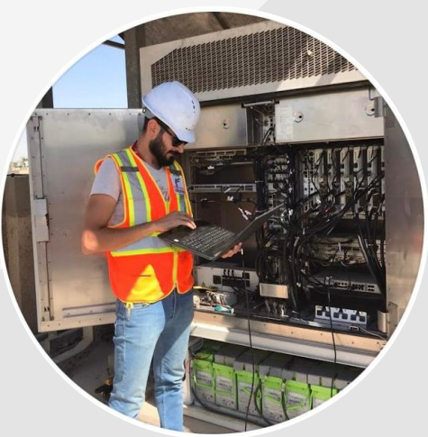

Mustafa Al-Obaidi
Network Engineer
CAREER SUMMARY
04 2021 – 06 2022
ONYXES – Network Engineer – IT for Zain Iraq
My main tasks included:
- Installing hardware, including switches, UPSs, and routers.
- Maintaining, optimizing, and monitoring network systems.
- Preformed testing to find problems and suggested solutions.
07 2020 – 01 2021
METTCO – Transmission engineer – Operations department – Project Zain Iraq
My main tasks included:
Upgrading microwave links from 3G to 4G. This means installing dish and modem and configuring microwave transmitters with team.
11 2019 – 04 2020
FIT GROUP – Site engineer – Automation & Telecom: Project Korek Telecom Baghdad
My main tasks included:
- Installing cabinets and overseeing the connection to RRU and network towers.
- Swapping cabinets from Ericsson to Huawei and from Ericsson to Ericsson as an upgrade from 2G to 3G.
06 2018 – 09 2018
FIT GROUP – Administration
My main tasks included:
- Creating and updating records and databases with personnel, financial and other data.
- Coordinating office activities and operations to secure efficiency.
- Supporting budgeting and bookkeeping procedures.
EDUCATION
06 2019
BA Computer Engineering – Electrical Engineering Technical College, Middle Technical University
Coursework included: Artificial neural networks, network security, electronic modelling systems and project management.
Graduation project:
Vending machine - Arduino Based Mechatronics Project
As a graduation project we built a fully functional vending machine that can be used with a touch card.